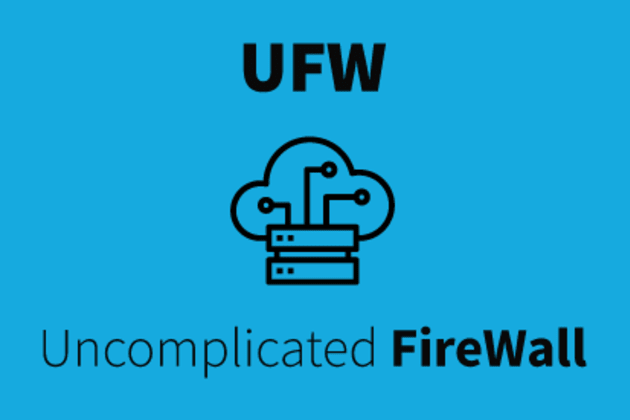

Traballo voluntario
✨ Lista de tareas: ✨
Mostra nunha captura de pantalla na que se demostra que ufw non permite ningunha comunicación co exterior.
Averigua os portos que ten abertos na túa máquina virtual a IP que se corresponde co teu router.
Fai un manual de uso para explicar a un compañeiro doutra clase como manexar un programa de esteganografía.
